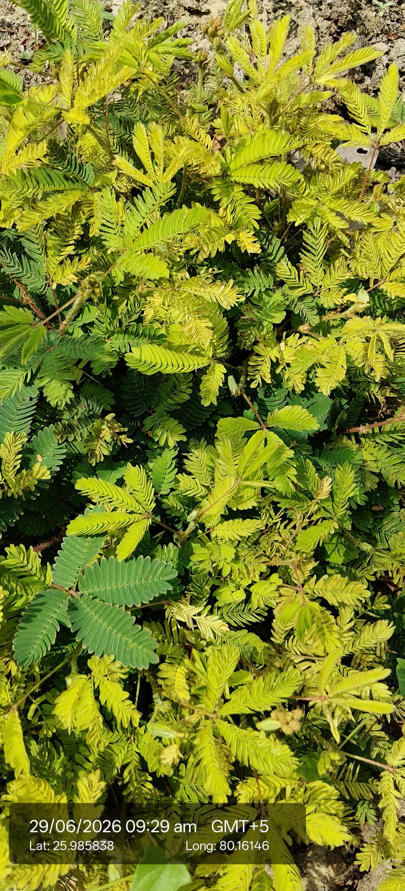

| Scientific name | Mimosa pudica L. |
|---|---|
| Family | Fabaceae (Legume family) |
| Category | Herbs |
Habitat & Growing Conditions
- Mimosa pudica grows naturally in tropical and subtropical regions. It is commonly found in grasslands, roadsides, open fields, wastelands, forest edges, gardens, and disturbed areas. It prefers well-drained sandy or loamy soils and grows well in warm, sunny conditions.
Ecological & Economic Importance
- Mimosa pudica is widely used in traditional herbal medicine.
- Its roots and leaves are used to treat wounds, diarrhea, piles, and skin infections in folk medicine.
- The plant contains bioactive compounds with antioxidant and antimicrobial properties.
- It helps improve soil fertility because it belongs to the legume family and can contribute nitrogen to the soil.
- It reduces soil erosion by covering bare ground with its spreading growth.
- It is grown as an ornamental plant because its leaves fold when touched, making it attractive for gardens.
- The plant is used in scientific studies to understand plant movement and sensitivity.
- It provides nectar and habitat for some insects and supports local biodiversity.
- In some areas, it is used as green manure to improve soil quality.
- Although useful, it can become a weed in agricultural fields if not properly managed.